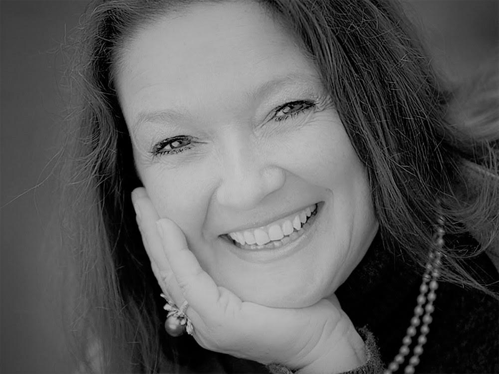

Ganador de los Premios Gràffica 2013 «por su humildad, su reconocido trabajo con clara proyección internacional, también por su versatilidad», explicaba el jurado.
El ganador de los Premios Gràffica ha realizado un trabajo que ha sido reconocido a nivel internacional, apareciendo en exposiciones y publicaciones en todo el mundo.
Ha dado conferencias y ha sido premiado por el Art Directors Club – incluyendo el Young Gun 2008–, el Type Directors Club y Creative Review, entre otros.Igualmente, ha sido reconocido con
un Premio Gràffica 2013 «por su humildad, su reconocido trabajo con clara proyección internacional, también por su versatilidad», según explicaba el jurado.
Día a día utilizamos todo tipo de productos, bebidas, comida, productos de baño, cosméticos, perfumes… y todos ellos se encuentran dentro de un recipiente distinto, dependiendo cual sea su contenido. África Garcia nos cuenta su experiencia.
La contribución del diseño al desarrollo de nuevos productos.
